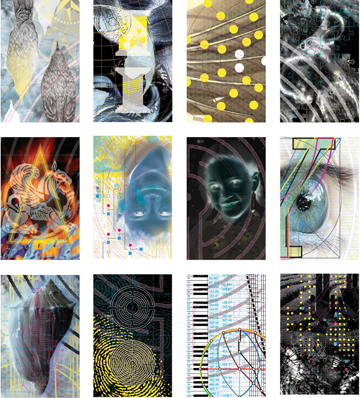
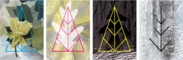
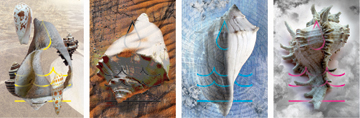
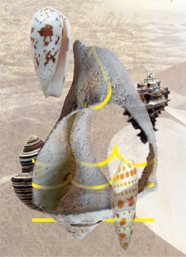

|
Anne Chesnut Images | Images 2 | Images 3 | Images 4 | Images 5 | Images 6 Anne Chesnut. Labyrinth Study: La Sinistra (series), 1999-2001 There are 12 prints that comprise this composite. The prints are made in two editions, one which is to be sold as a complete set of 12 and a second edition with slightly larger prints which are sold individually.  Anne Chesnut. Labyrinth Study: La Destra, 2004-2005 12 prints comprise this composite which is one of two labyrinth studies:  Anne Chensut. Tree of Life | Seasons, 2005 Individual prints identified as: Spring, Summer, Fall, Winter  Anne Chesnut. Leavings | Seasons, 2005 Individual prints identified as: Summer, Fall, Winter, Spring  Anne Chesnut. Summer from the series Leavings | Seasons, 2005
Images | Images 2 | Images 3 | Images 4 | Images 5 | Images 6 |


| © 1995-2012 All Rights Reserved. Les Yeux du Monde |